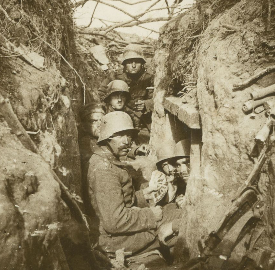

Guerras Mundiales 1914-1945
El siglo XX protagoniza las más cruentas guerras de nuestra historia. En la historia moderna de la humanidad
se conocen dos «Guerras Mundiales». La Primera Guerra Mundial (1914-1918), también conocida como 'la Gran Guerra',
donde la Triple Entente luchó contra la Triple Alianza. Y la Segunda Guerra Mundial (1939-1945),
donde los Aliados lucharon contra las Potencias del Eje.
Una serie de crisis internacionales llevaron a la conformación de dos grandes bandos de países enfrentados:
La Triple Alianza, en la que se nuclearon Alemania, el Imperio Austrohúngaro e Italia.
Triple Entente, compuesta por Francia, Gran Bretaña y Rusia.
En 1914, el asesinato del archiduque austríaco Francisco Fernando en Sarajevo desencadenó una serie de acontecimientos que activaron las alianzas previamente conformadas y llevaron al estallido la Primera Guerra Mundial.

El período que antecedió a la Primera Guerra Mundial, se conoce como la “Paz Armada” y se caracteriza por la
creciente tensión que hubo entre las potencias imperialistas europeas en su competencia política, económica,
ideológica y territorial. En ese contexto, los diferentes Estados fueron conformando alianzas estratégicas
con otros países y volcaron sus industrias a la producción militar y armamentística.
En 1914, el asesinato del archiduque austríaco Francisco Fernando en Sarajevo desencadenó una serie de acontecimientos que activaron las alianzas previamente conformadas y llevaron al estallido la Primera Guerra Mundial.
Entre finales del siglo XIX y comienzos del siglo XX, hubo tres elementos clave en el panorama político y económico mundial que tensionaron las relaciones entre las potencias europeas:
-
La globalización de la economía mundial.
-
El desarrollo tecnológico de la Segunda Revolución Industrial.
-
La expansión colonial europea de fines del siglo XIX.